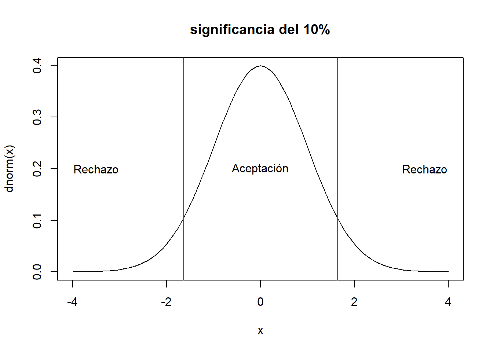
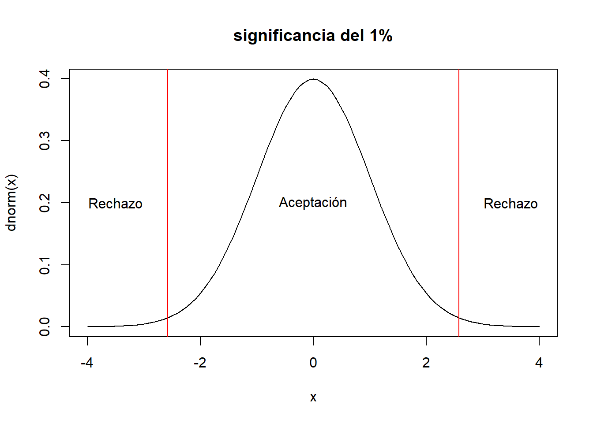

4 Prueba de Hipótesis
Dado que el principal objetivo de la inferencia estadística es aproximarse al valor de los parámetros (\(\theta\)) mediante un estimador muestral \(\hat{\theta}\) que viene de una distribución muestral y por lo tanto es una variable aleatoria también.
Otra estrategia a parte de la estimación (puntual o por intervalos) del parámetro \(\theta\) es la de plantear hipótesis al rededor de los valores del parámetro. A esto le vamos a denominar una prueba de hipótesis, donde solamente existen dos posibles resultados; Rechazamos la hipótesis o no la rechazamos.
En este tema se explora las pruebas de hipótesis estadísticas sobre parámetros comunes, vistos anteriormente:
- Media
- Diferencia de medias
- Proporción
- Diferencia de proporciones
- Datos pareados (colección de información de la misma unidad, en diversos momentos del tiempo)
- Varianza
- Igualdad de varianza
Adicionalmente, al final del tema se vera la pruebas de bondad de ajuste, que se sirven para plantear cuando una serie de datos tiene una determinada distribución
Todas las pruebas que se verán están enmarcadas en lo paramétrico, es decir, se realizarán supuestos respecto la distribución de la información y se trabaja con distribuciones conocidas como; la normal, t-student, \(\chi^2\), F.
Mencionar que existen las pruebas de hipótesis no paramétricas, estas funcionan sobre las distribuciones libres.
4.1 Introducción
4.1.1 Hipótesis estadística
Tener presente que la hipótesis que se defina debe estar siempre en términos del parámetro, no de la muestra. Cuando elaboramos una hipótesis esta tiene dos elementos; la hipótesis que se plantea (hipótesis nula) y el complemento de esta hipótesis (hipótesis alternativa), esta última puede ser de un lado o de dos lados.
\[H_0: \theta = k\] \[H_1: \theta \neq k \quad(\text{2 lados})\] \[H_1: \theta < k \quad(\text{1 lado})\] \[H_1: \theta > k \quad(\text{1 lado})\]
4.1.2 Región de aceptación y región de rechazo
Al plantear un hipótesis estadística sobre un parámetro de alguna población, la manera de verificar dicha hipótesis pasara por estudiar una muestra aleatoria sobre la cual se establecera una regla que nos permita decir si la hipótesis es correcta o no. Tradicionalmente se definirá un estadístico de prueba que nos permitirá decidir. Por ejemplo, estamos interesados en conocer el promedio de ingresos laborales mensuales de las personas que viven en el municipio de La Paz. Planteamos la hipótesis nula:
\[H_0: \mu_{ingreso}=3000.Bs\] La hipótesis alternativa
\[H_1: \mu_{ingreso} \neq 3000.Bs\] Imaginemos que tomamos una muestra aleatoria de personas del municipio de La Paz y les consultamos acerca de su ingreso laboral mensual, el resultado del promedio muestral es de
\[\bar{x}=?\]
Una regla para contrastar una hipótesis es definir la región de aceptación y la región de rechazo, en este ejemplo podemos momentaneamente de forma arbitraria podemos decir que “aceptamos” la \(H_0\) si
\[2700\leq\bar{x}\leq 3100\]
En otro caso, se rechaza la hipótesis y la región que esta fuera de la región de aceptación se conoce como región de rechazo (\(\bar{x}<2700\) ó \(\bar{x}>3100\)).
Nota: En la práctica, normalmente la región de aceptación para pruebas de 2 lados coincide con el intervalo de confianza.
Tener presente los conceptos de:
- Hipótesis nula
- Hipótesis alternativa (1 lado, 2 lados)
- Estadístico de prueba
- Región de aceptación
- Región de rechazo
- Error de tipo I
- Error de tipo II
4.1.3 Errores de tipo I y errores de tipo II
(investigar de que se trata y buscar ejemplos)
- (Falso positivo) Error de tipo I (\(\alpha\))
- (Falso negativos) Error de tipo II (\(\beta\))

4.1.4 Pruebas bilaterales
\[H_0: \theta=k\]
\[H_1: \theta\neq k\]

4.1.5 Pruebas unilaterales
Existen de 2 tipos,

4.1.6 Pasos para la prueba hipótesis estadística
- Plantear la prueba de hipótesis; definir \(H_0\) y \(H_1\)
- Establecer el nivel de significancia de la prueba; el error de tipo I a tolerar, normalmente los valores más usuales son \(\alpha=\{0.01,0.05,0.1\}\)
- Seleccionar y construir el estadístico de prueba adecuado; se obtiene usando la información de una muestra aleatoria
- Determinar las regiones de aceptación y rechazo; estas regiones se construyen usando como insumo el paso 2 y 3
- Tomar una decisión en base al estadístico de prueba y las regiones de aceptación y rechazo identificadas.
4.2 Prueba de hipótesis sobre la media
Para las pruebas al rededor de la media, vamos a suponer que los datos de interés se distribuyen como una normal o al menos que la muestra aleatoria para el estadístico de prueba es “grande” y por lo tanto podemos usar el teorema del limite central. Existen dos variaciones para esta prueba; cuando se conoce la varianza y cuando no se conoce
4.2.1 Con varianza conocida
- Hipótesis
\[H_0: \mu=\mu_0\] \[H_1: \mu \neq \mu_0\]
- Nivel de significancia; es \(\alpha\), dado que es una prueba bilateral existen dos regiones de rechazo, cada una de estas 2 regiones con probabilidad \(\alpha/2\)
- Estadístico de prueba; Se cuenta con una muestra aleatoria (\(X_1,X_2,\ldots,X_n\)) iid de tamaño \(n\), de tal forma que cada una de estas variables \(X_i\sim .(E(X_i)=\mu,\sigma(conocido))\). La estadística de prueba es:
\[Z_0=\frac{\bar{X}-\mu_0}{\frac{\sigma}{\sqrt{n}}}\]
Este estadístico supone que \(Z_0\sim N(0,1)\), en el supuesto que \(E[\bar{X}]=\mu=\mu_0\), este supuesto se cumple siempre y cuando \(H_0\) sea cierta
- Región de aceptación y rechazo
curve(dnorm(x),xlim=c(-4,4),main="significancia del 10%")
#
abline(v=c(-1.64,1.64),col="red")
text(c(-3.5,0,3.5),rep(0.2,3),c("Rechazo","Aceptación","Rechazo"))
# al 5 %
curve(dnorm(x),xlim=c(-4,4),main="significancia del 5%")
abline(v=c(-1.96,1.96),col="red")
text(c(-3.5,0,3.5),rep(0.2,3),c("Rechazo","Aceptación","Rechazo"))
# al 1 %
curve(dnorm(x),xlim=c(-4,4),main="significancia del 1%")
abline(v=c(-2.58,2.58),col="red")
text(c(-3.5,0,3.5),rep(0.2,3),c("Rechazo","Aceptación","Rechazo"))
#qnorm(0.01/2)- La decisión; Se rechaza la \(H_0\) cuando:
\[Z_0>Z_{\alpha/2} \quad ó \quad Z_0<-Z_{\alpha/2}\] Los valores usuales para los \(Z_{\alpha/2}\) son:
- al 10 de significanca: \(Z_{\alpha/2}=1.64\)
- al 5 de significanca: \(Z_{\alpha/2}=1.96\)
- al 1 de significanca: \(Z_{\alpha/2}=2.58\)
Ejercicio. Se sabe que los diámetros de tornillos tienen una desviación estándar de 0.0001 plg. Una muestra aleatoria de 35 tornillos produce un diámetro promedio de 0.2546 plg. Prueba la hipótesis de que el diámetro medio real es de 0.255 plg. empleando un \(\alpha=0.05\).
\[H_0: \mu=0.255\] \[H_1: \mu\neq0.255\]
\[Z_0=\frac{0.2546-0.255}{\frac{0.0001}{\sqrt{35}}}=-23.66\]
Se rechaza \(H_0\) si:
\[-23.66>1.96 \quad ó \quad -23.66<-1.96\] Por lo tanto rechazamos la hipótesis nula de que la media de diámetro de los tornillos sea de 0.255 plg.
Para las pruebas unilaterales se utiliza el mismo estadístico de prueba \(Z_0\), con las siguientes hipótesis y región de rechazo.
\[H_0: \mu=\mu_0\] \[H_1: \mu>\mu_0\] Se rechaza \(H_0\) si \(Z_0>Z{\alpha}\).
\[H_0: \mu=\mu_0\]
\[H_1: \mu < \mu_0\] Se rechaza \(H_0\) si \(Z_0<-Z{\alpha}\)
Los valores usuales para los \(Z_\{alpha}\) de pruebas unilaterales.
- \(Z_{0.1}=1.28\)
- \(Z_{0.05}=1.64\)
- \(Z_{0.01}=2.33\)
4.2.2 Con varianza desconocida
Si el tamaño de muestra fuera mayor 30, todo lo visto anteriormente se mantiene, el único cambio se da al momento de calcular el estadístico de prueba donde en lugar de \(\sigma\) tomamos la varianza muestral \(\hat{S}\)
\[Z_0=\frac{\bar{X}-\mu_0}{\frac{\hat{S}}{\sqrt{n}}}\] Si la muestra no es mayor 30, podemos suponer que los datos son normales y la aproximación para la región de aceptación y rechazo vienen de una t-student.
- Estadístico de prueba
\[t_0=\frac{\bar{X}-\mu_0}{\frac{\hat{S}}{\sqrt{n}}}\]
Región de aceptación y rechazo; si \(H_0\) es cierta, entonces \(t_0\sim t(n-1)\).
La decisión; Se rechaza la \(H_0\) cuando:
\[t_0>t_{\alpha/2,n-1} \quad ó \quad t_0<-t_{\alpha/2,n-1}\]
4.3 Prueba de hipótesis sobre la diferencia de medias
Esta prueba se utiliza principalmente cuando se contrasta valores de 2 poblaciones independientes. Las hipótesis son:
\[H_0: \mu_1=\mu_2\] \[H_1: \mu_1\neq\mu_2\] Suponemos que se extrae muestras aleatorias de cada una de las poblaciones de tamaño \(n_1\) y \(n_2\) respectivamente. Se supone que cada una de las muestras las poblaciones se distribuyen iid con media desconocida y varianza conocida. Si suponemos que la muestra en ambas poblaciones son grandes \(n_1,n_2>30\) usando el teorema central del limite podemos afirmar en base a los capitulos anteriores
\[\bar{X_1}-\bar{X}_2\sim N \left(\mu_1-\mu_2,\frac{\sigma_1^2}{n_1}+\frac{\sigma_2^2}{n_2}\right)\] Por lo tanto se puede plantear como estadístico de prueba si \(H_0\) es cierta:
\[Z_0=\frac{\bar{X_1}-\bar{X}_2}{\sqrt{\frac{\sigma_1^2}{n_1}+\frac{\sigma_2^2}{n_2}}}\sim N(0,1)\]
Finalmente, en base a la distribución de \(Z_0\), se rechaza la igualdad de medias cuando:
\[Z_0>Z_{\alpha/2} \quad ó \quad Z_0< -Z_{\alpha/2} \] Cuando la varianza no es conocida pero el tamaño de muestra es mayor a 30 para ambas poblaciones, el estadístico de prueba es el único que cambia
\[Z_0=\frac{\bar{X_1}-\bar{X}_2}{\sqrt{\frac{\hat{S}_1^2}{n_1}+\frac{\hat{S}_2^2}{n_2}}}\sim N(0,1)\] Cuando \(H_1: \mu_1>\mu2\) se rechaza la \(H_0\) cuando:
\[Z_0>Z_{\alpha}\] Cuando \(H_1: \mu_1<\mu2\) se rechaza la \(H_0\) cuando:
\[Z_0<-Z_{\alpha}\] Cuando la muestra es menor a 30 en una o ambas poblaciones, se debe hacer el supuesto que los datos son normales y aproximar la distribución a una \(t-student\). En este caso el estadístico de prueba es:
\[t_0=\frac{\bar{X_1}-\bar{X}_2}{\sqrt{\frac{\hat{S}_1^2}{n_1}+\frac{\hat{S}_2^2}{n_2}}}\]
Lo anterior para el estadístico \(t_0\) es valido bajo el supuesto de normalidad de los datos y las varianzas de las poblaciones no son iguales \(\sigma_1 \neq \sigma_2\).
En el caso donde suponemos igualdad de varianzas \(\sigma_1 = \sigma_2\). El estadístico de prueba es:
\[t_0=\frac{\bar{X_1}-\bar{X}_2}{\hat{S}_p\sqrt{\frac{1}{n_1}+\frac{1}{n_2}}}\] Donde:
\[\hat{S}^2_p=\frac{(n_1-1)\hat{S}_1^2+(n_2-1)\hat{S}_2^2}{n_1+n_2-2}\]
Entonces, para el caso de igualdad de varianza se rechaza la \(H_0\) cuando:
\[t_0>t_{\alpha/2,n_1+n_2-2} \quad ó \quad t_0<-t_{\alpha/2,n_1+n_2-2}\]
Cuando las varianzas no son iguales, se rechaza la \(H_0\) cuando:
\[t_0>t_{\alpha/2,v} \quad ó \quad t_0<-t_{\alpha/2,v}\] Donde:
\[v=\frac{\frac{\hat{S}_1^2}{n_1}+\frac{\hat{S}_2^2}{n_2}}{\frac{(\hat{S}^2_1/n_1)^2}{n_1+1}+\frac{(\hat{S}^2_2/n_2)^2}{n_2+1}}-2\]
Ejemplo. Dos tipos de plásticos son apropiados para que los utilice un fabricante de componentes electrónicos. La resistencia al rompimiento de estos plásticos es importante, Se sabe que \(\sigma_1=\sigma_2=1.0\) psi. De una muestra aleatoria de tamaño \(n_1 = 10\) y \(n_2 = 12\) obtenemos \(\bar{X}_1 = 162.5\) y \(\bar{X}_2 = 155.0\). La compañía no adoptará el plástico 1 a menos que su resistencia al rompimiento exceda la del plástico 2 al menos por 10 psi. De acuerdo con la información de la muestra, ¿debe utilizarse el plástico I?
Solución, la variable es el resistencia al rompimiento de dos tipos de plásticos. Sea \(\mu_1\) y \(\mu_2\) los promedios de resistencia de los plásticos 1 y 2 respectivamente.
\[H_0: \mu_1=\mu_2+10\] Vamos a definir una tercera variable en base al plástico 2 que sea \(y=x_2+10\), de tal forme que \(\mu_y=E[y]=\mu_2+10\) , también, \(\sigma^2_y=V(Y)=V(X_2)=\sigma_2^2\) , así la hipótesis es:
\[H_0: \mu_1=\mu_y\] \[H_1: \mu_1 \neq \mu_y\] \[H_1: \mu_1 < \mu_y\]
\[Z_0=\frac{162.5-(155.0+10)}{\sqrt{\frac{1}{10}+\frac{1}{12}}}=-5.8387\] Evaluando en la región de rechazo con una significancia del 5%
\[-5.84< -1.96 = -Z_{\alpha/2}\]
Por lo tanto rechazamos \(H_0\)
Ahora el prueba unilateral
\[-5.84< -1.64 = -Z_{\alpha}\] Para ambas \(H_1\) se rechaza la \(H_0\). Por lo tanto estadísticamente se recomienda no usar el plástico I ya que no supera en 10 psi al plástico 2
Si contrastamos:
\[H_1: \mu_1>\mu_y\] Se rechaza la \(H_0\) si:
\[-5.84> 1.64 = Z_{\alpha}\]
4.4 Prueba de hipótesis sobre la proporción
Partimos de las siguientes hipótesis:
\[H_0: P=P_0\] \[H_1: P \neq P_0\] \[H_1: P < P_0\] \[H_1: P > P_0\] Como se vio en el capítulo anterior podemos suponer que tenemos una muestra aleatoria de tamaño \(n\) donde las variables de esta muestra \(X\sim N(nP,n*P*(1-P))\), entonces si la hipótesis nula es cierta entonces \(X\sim N(nP_0,n*P_0*(1-P_0))\). Así el estadístico de prueba es la estandarización de \(X\).
\[Z_0=\frac{X-nP_0}{\sqrt{n*P_0*(1-P_0)}}\sim N(0,1)\]
Donde \(X\) representa el número de casos en la muestra aleatoria que pertenecen a la clase de interés.
De esta forma en una prueba bilateral se rechaza la \(H_0\) si
\[Z_0< - Z_{\alpha/2} \quad ó \quad Z_0> Z_{\alpha/2}\] Para las pruebas unilaterales, con \(H_1: P> P_0\), se rechaza \(H_0\) cuando:
\[Z_0>Z_\alpha\] Con \(H_1: P< P_0\), se rechaza \(H_0\) cuando:
\[Z_0<-Z_\alpha\] Ejercicio, De 1000 casos seleccionados de cáncer en el pulmón, 823 terminaron en muerte. Se podría decir que el porcentaje de muertes es del 90%, o mayor a este valor.
Solución, el parámetro de interés es la proporción de muertes por el cáncer de pulmón (\(P\))
\[H_0: P=0.9\] \[H_1: P\neq0.9\] \[H_2: P > 0.9\] El estadístico de prueba:
\[Z_0=\frac{823-1000*0.9}{\sqrt{1000*0.9*0.1}}=-8.11\] Para la prueba bilateral a un \(\alpha=0.05\):
\[-8.11< - 1.96 \quad ó \quad -8.11> 1.96\] Por lo tanto se rechaza la \(H_0\). Mientras que para la prueba unilateral
\[-8.11>1.64\]
No hay evidencia estadística para rechazar \(H_0\) y aceptar \(H_2\).
4.5 Prueba de hipótesis sobre la diferencia de Proporciones
En este caso el supuesto principal es que se trabajan con 2 poblaciones independientes y sobre ellas se busca contrastar el valor de sus proporciones de alguna clase en particular.
\[H_0: P_1=P_2\] \[H_1: P_1 \neq P_2\] \[H_1: P_1 > P_2\] \[H_1: P_1 < P_2\]
Se parte con dos muestras aleatorias de tamaños \(n_1\) y \(n_2\) de ambas poblaciones, y sea \(X_1\), \(X_2\) el número de observaciones que pertenecen a la clase de interés en las muestras. Si aproximamos a \(X_1\) y \(X_2\) como normales al ser estas binomiales, si se trabaja a nivel de los estimadores, sean \(\hat{P}_1\) y \(\hat{P}_2\) se sabe que:
\[Z_0=\frac{\hat{P_1}-\hat{P_2}}{\sqrt{\hat{P}(1-\hat{P})*\left[\frac{1}{n_1}+\frac{1}{n_2} \right]}}\sim N(0,1)\] \[\hat{P}=\frac{X_1+X_2}{n_1+n_2}\] De esta forma en una prueba bilateral se rechaza la \(H_0\) si
\[Z_0< - Z_{\alpha/2} \quad ó \quad Z_0> Z_{\alpha/2}\] Para las pruebas unilaterales, con \(H_1: P_1> P_2\), se rechaza \(H_0\) cuando:
\[Z_0>Z_\alpha\] Con \(H_1: P_1< P_2\), se rechaza \(H_0\) cuando:
\[Z_0<-Z_\alpha\] Ejercicio, del libro guía del capítulo resolver el ejercicio 11.41 y 11.42
4.6 Tamaño de muestra y su relación con el error de tipo I y tipo II
Recordar que el error de tipo 1 denotado por \(\alpha\) es el falso positivo o también establece el riesgo de rechazar algo que es verdadero. Mientras que el error de tipo 2, denotado por \(\beta\) es el falso negativo, que establece el riesgo de aceptar algo que es falso.
Para la prueba de hipótesis para la media, la formula para el tamaño de muestra es:
Bilateral,
\[n=\frac{(Z_{\alpha/2}+Z_\beta)^2 \sigma^2}{\delta^2 }\] Unilaterales
\[n=\frac{(Z_{\alpha}+Z_\beta)^2 \sigma^2}{\delta^2 }\]
Ejercicio, 11.2 del libro guía.
Se está estudiando el rendimiento de un proceso químico. De la experiencia previa se sabe que la varianza del rendimiento con este proceso es 5. Los últimos cinco días de operación de la planta han dado como resultado los siguientes rendimientos (en porcentajes):
\[91.6,88.75,90.8,89.95,91.3.\]
- ¿Hay razón para creer que el rendimiento es menor al 90%?
- ¿Que tamaño de muestra se requeriría para detectar un rendimiento medio verdadero de 85% con probabilidad de 0.95?
Solución,
\[H_0: \mu=90\] \[H_1: \mu<90\] \[Z_0=\frac{\bar{X}-\mu_0}{\frac{\sigma}{\sqrt{n}}}=\frac{90.48-90}{\frac{2.24}{\sqrt{5}}}=0.48\] Se rechaza \(H_0\) si (a un \(\alpha=0.05\)):
\[0.48<-Z_{\alpha}=-1.64\] Por lo tanto no hay evidencia estadística para rechazar \(H_0\).
\[n=\frac{(Z_{\alpha}+Z_\beta)^2 \sigma^2}{\delta^2 }=\frac{(1.64+1.64)^2 5}{(-5)^2 }=2.15 \approx 3\]
De forma análoga en las otras pruebas estadísticas se tienen los tamaños de muestra:
Para la diferencia de medias
Bilateral \[n=\frac{(Z_{\alpha/2}+Z_\beta)^2 (\sigma_1^2+\sigma_2^2)}{\delta^2 }\]
\[n=\frac{(Z_{\alpha}+Z_\beta)^2 (\sigma_1^2+\sigma_2^2)}{\delta^2 }\] Para la proporción,
Bilateral
\[n=\left(\frac{Z_{\alpha/2} \sqrt{P_0(1-P_0)}+Z_{\beta} \sqrt{P(1-P)}}{P-P_0} \right)^2\] Donde \(P\) es el valor propuesto para \(H_1\).
Unilateral
\[n=\left(\frac{Z_{\alpha} \sqrt{P_0(1-P_0)}+Z_{\beta} \sqrt{P(1-P)}}{P-P_0} \right)^2\]
Tareas, revisar el libro guía el capítulo 11, en los apartados:
- 11-10.2. Tamaño de muestra para la diferencia de proporciones
- Revisar la tabla 11.7
- Revisar la Prueba de hipótesis sobre la varianza
- Revisar la Prueba de hipótesis sobre la igualdad de varianzas
- Se recomienda ir resolviendo los ejercicios del capitulo 11